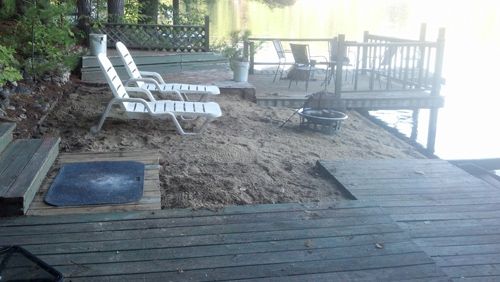

LOST LURE LODGE was built in 1967, and has been home to three generations of family memories since the summer of 1968.
In addition to a three-level waterfront deck and dock, The house has a full-width screen porch facing the lake, with a deck on the back that catches the sun on cool afternoons.
Lakeside living is mostly about being outdoors, but in the evenings or when the weather doesn't cooperate, the porch is great for sitting and reading or working a jigsaw puzzle.
Inside, there are two and a half bedrooms sleeping 5, one bath, and a full-length kitchen/dining/living area. The house can be used from April through October, thanks to a propane-fired Jotul stove in the living-room fireplace.
With more than 100 feet of waterfront, it's a great place to build a lifetime of family memories. It's on the market through Assets Realty Group. For more information, contact CC Cossette at 603-387-3699 or cc@assetsrg.com.